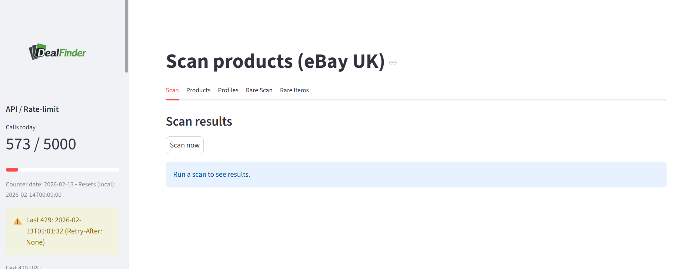

Application Interface


DealFinder is a Windows desktop application that uses the official eBay Browse API to perform structured product discovery and listing analysis.
DealFinder performs controlled, structured API searches across defined product profiles. Typical usage in production is approximately 4,000–5,000 Browse API calls per day, with retry handling and rate-limit monitoring implemented.
For API review or application growth inquiries:
champnos@hotmail.com